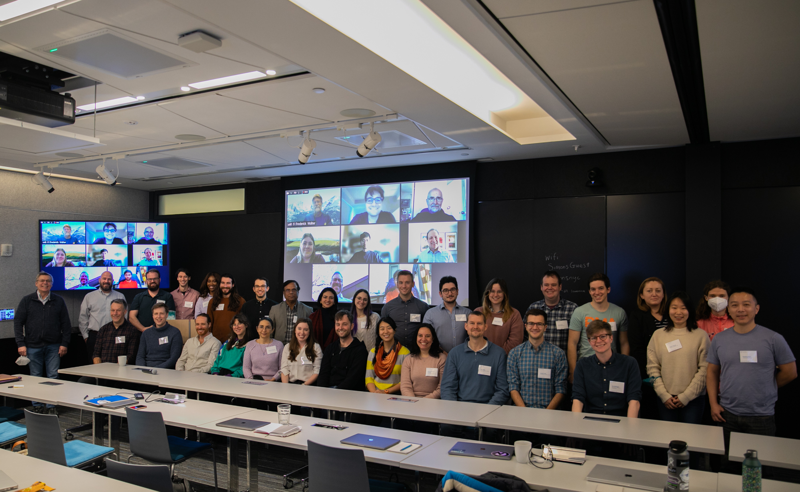

The Sun-as-a-Star Workshop took place in March 2023. The original workshop website is archived here and includes a full participant list and workshop collaboration policy.
In recent years, disk-integrated high-resolution solar spectra with broad optical wavelength coverage have become available in large quantities from ground-based spectrographs such as NEID, EXPRES, HARPS-N, PEPSI, and others. These high-fidelity Sun-as-a-star spectra give us a detailed view of how thousands of spectral lines vary on timescales from minutes to years. The primary motivation for gathering these data sets is to understand how stellar variability in Sun-like stars impacts the detection of exoplanets. Along the way, however, we stand to learn more about the Sun itself.
This workshop aims to bring together experts in heliophysics, stellar astrophysics, and exoplanetary observations to explore the scientific uses of Sun-as-a-star spectra. What can we learn about the Sun’s physical processes from convection to magnetic surface features? What synergies exist with other Solar observations? What work has already been done with these spectra and how does it fit into the broader landscape of research questions in solar and stellar physics? How, in turn, can current heliophysics research inform future work in radial velocity exoplanet searches?
The full workshop schedule is available here. Links to recordings of each talk session are in the schedule.
Alternatively, you can find all recorded sessions together on this page.
If you are publishing a paper that originated in or substantially benefited from the workshop's hack days, we ask that you include the following acknowledgement text to help us track the workshop impact:
This project was developed in part at the 2023 Sun-as-a-Star Workshop, hosted by the Center for Computational Astrophysics of the Flatiron Institute in New York City.
In addition, please make sure that you abide by the workshop Collaboration Policy by extending co-authorship to any workshop participant who contributed significantly. (It may be useful to check the slack archive for a record.)
Please contact Megan Bedell with any questions.